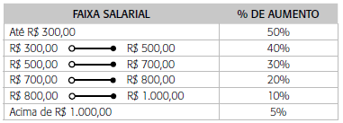

Faça um programa que receba o salário de um funcionário e, usando a tabela a seguir, calcule e mostre o novo salário.
Escreva o código Kotlin necessário dentro da função calcularNovoSalario existente no arquivo Task.kt. Após implementar a função calcularNovoSalario clique no botão Check, logo abaixo, para verificar se seu código esta correto.